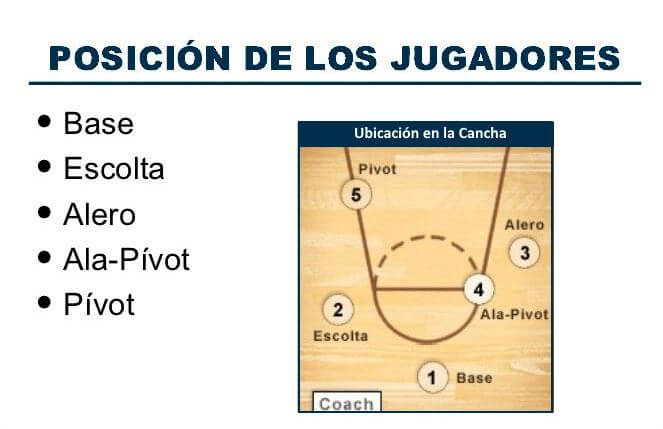

Tras definir las reglas del baloncesto y finalmente que su número de jugadores sea 5 en pista, se han ido definiendo las posiciones de estos dentro de la pista, y aunque de los inicios al baloncesto actual han sufrido muchos cambios ya que el baloncesto es un deporte que nunca para de evolucionar estas son las principales posiciones y características de cada uno de los jugadores:
BASE
También llamado “playmaker” o jugador 1 en la terminología del entrenador, es el creador del juego. En ataque es el jugador que sube la pelota y dirige el juego, ordena y mandando el sistema de juego. Sus características más habituales con un buen manejo de balón, visión de juego, capacidad de dar buenos pases, buena velocidad y hoy en día normalmente con buen tiro exterior. En los bases son muy apreciadas las asistencias, pero hoy en día cada vez hay más bases anotadores y que son la pieza angular del sistema de ataque del equipo.
ESCOLTA
“Shooting guard” o jugador 2, era conocido como la persona que acompañaba al base en la subida de balón, es decir, que debe tener características muy similares a las de un base sin serlo, pero hoy en día encontramos escoltas que pueden jugar en cualquiera de las posiciones exteriores. Normalmente los escoltas suelen ser más ofensivos en cuanto a puntos y les toca lidiar defensivamente con jugadores muy anotadores.
ALERO
“Small Forward” o jugador 3, en generalmente de los exteriores el que cuenta con más altura, su juego está equilibrado entre la fuerza y el tiro. Sus características físicas tienen que ser altura y velocidad. Normalmente son los jugadores con el más alto porcentaje de tiro exterior y también ayudan en el rebote ofensivo y defensivo.
ALA-PIVOT
“Power fordward” o jugador 4, es un juego muy similar al del pívot, antiguamente y en una disposición de juego de 3 exteriores y 2 interiores la mayoría de sus puntos procedían de poste bajo, pero con la llegada del baloncesto moderno y el cambio en las características físicas de los jugadores, actualmente más ágiles y coordinados, es la posición que más cambios ha experimentado. Hoy en día esta posición suele ser más exterior, contando con jugadores con características muy similares a las del 3, pudiendo defender a un exterior o un interior, la mayor arma de este jugador es su polivalencia.
PIVOT
“Center” o jugador 5, suelen ser los jugadores de mayor altura del equipo y los más pesador o fuertes. Normalmente un pívot debe potenciar su altura cerca del aro y son los jugadores que más canastas cerca de aro meten y más rebotes cogen. Pero al igual que la posición anterior, hoy en día también podemos encontrar a los jugadores más altos de la liga teniendo grandes porcentajes de tiro exterior y sorprendiéndonos con otras muchas habilidades.